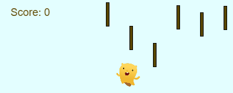

Advanced JS: Games & Visualizations
This module taught me more about the capabilities of JavaScript and it's use in creating basic games and interactive programs.
Impact on Me as a Student
This module focuses on making more interactive programs in the form of games such as basic side scrollers and memory games. It taught me about implementing game mechanics into code such as points and having objects that give or take points, or making a character move with keypresses. By using this I was able to learn more about JavaScript syntax and functions such as translate(), pushMatrix() and popMatrix(). One of the biggest appeals for computer science is the ability to make games and by using that as the motivation I was able to learn more about coding and JavaScript. This has also taught me that sometimes having some type of motivation can be very helpful in getting you to learn something. By applying something you like, you can make learning more enjoyable and more effective.
How Will I use this to Continue Learning?
Now that I've learned some of the basics of applying game mechanics into code, I can continue to learn about creating different types of games and more complex games. I can continue to learn more and more about the capabilities of JavaScript and making programs that involve interacivity and user input. I will use the strategy of connecting learning to something I enjoy to learn different things whether it be computer science or anything else.